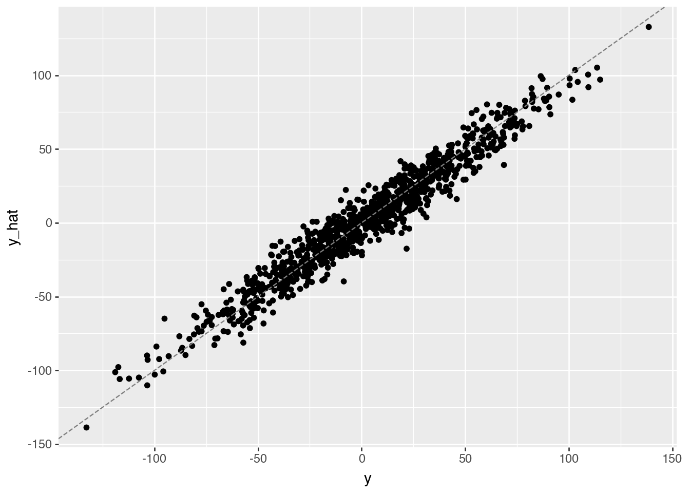
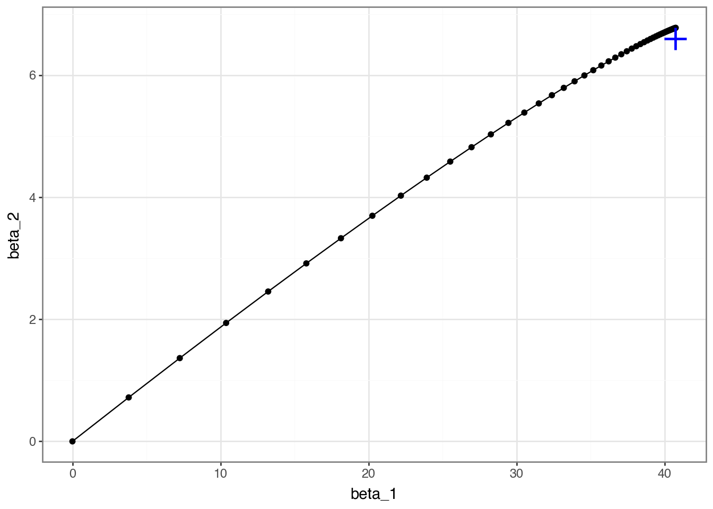
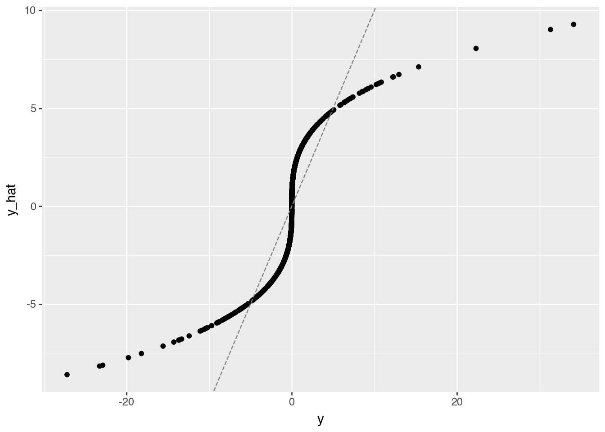
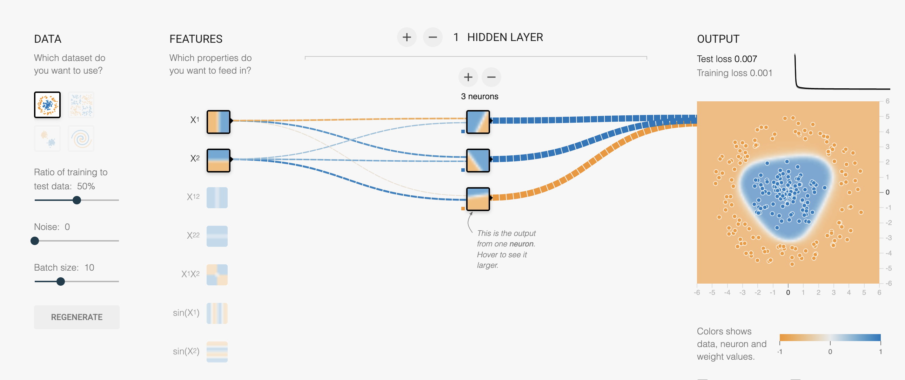
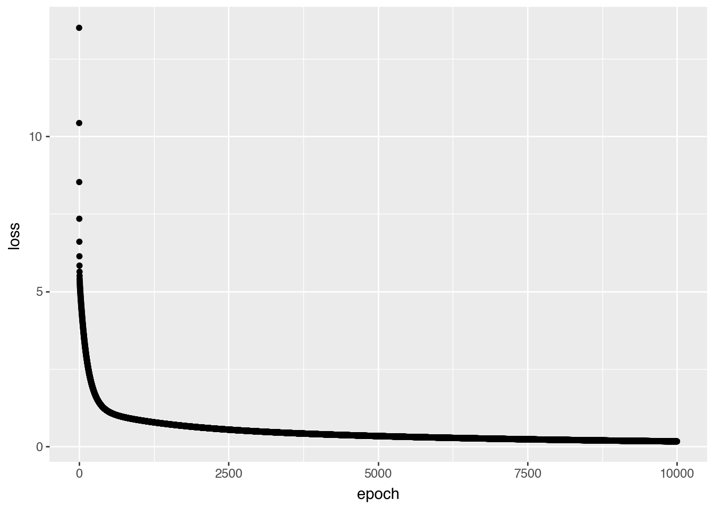
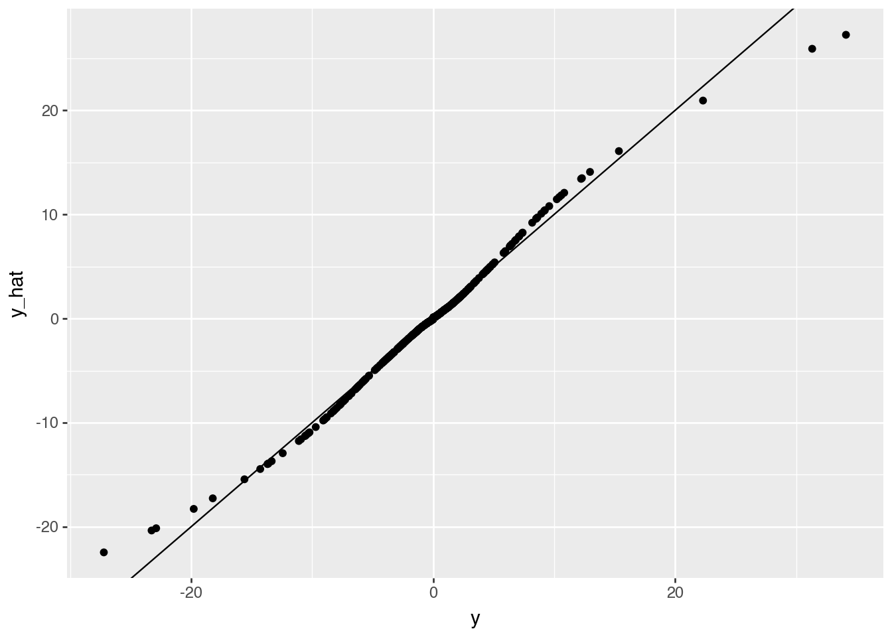

## install packages if needed (set to True on first run in Colab)
if False:
%pip install scikit-learn plotnine tqdm torch01 · Quick Introduction to Deep Learning
gene46100
notebook
Note: If the notebook doesn’t render correctly, click Open with → Google Colaboratory in the top-right of the Google Drive preview.
Learning Objectives
- Understand and implement gradient descent to fit a linear model
- See why linear models fail on nonlinear data
- Build and train a multi-layer perceptron (MLP) using PyTorch
- Learn the basics of PyTorch: model definition, loss function, and optimizer
Install and load packages
from sklearn.datasets import make_regression
import numpy as np
from numpy.linalg import inv
from plotnine import qplot, ggplot, geom_point, geom_line, aes, geom_abline
from plotnine.themes import theme_bw
from plotnine.geoms import annotatePart 1: Fit a Linear Model
The linear model is the workhorse of statistics:
y = X\beta + \epsilon \qquad \text{where } \epsilon \sim N(0, \sigma)
We’ll simulate data, solve it analytically, then learn to solve it with gradient descent — the engine behind all of deep learning.
Simulate linear data
We generate 1000 samples with 2 features. We define “true” coefficients and add noise.
np.random.seed(42)
bias = 0
noise = 10
x, y, coef = make_regression(
n_samples=1000,
n_features=2,
n_informative=2,
n_targets=1,
bias=bias,
noise=noise,
coef=True
)print('x.shape:', x.shape)
print('y.shape:', y.shape)
print('coef (true beta):', coef)x.shape: (1000, 2)
y.shape: (1000,)
coef (true beta): [40.71064891 6.60098441]Predict y with ground truth parameters
Since we know the true \beta, we can compute \hat{y} directly and see how noise affects the fit.
y_hat = x.dot(coef) + bias(qplot(x=y, y=y_hat, geom="point", xlab="y", ylab="y_hat") +
geom_abline(intercept=0, slope=1, color='gray', linetype='dashed'))
Analytical solution: the normal equation
For linear regression, there’s a closed-form solution:
\hat{\beta} = (X^TX)^{-1}X^Ty
This gives the coefficients that minimize mean squared error exactly.
Exercise
Derive the normal equation from the model y = X\beta + \epsilon using matrix calculus.
var = x.transpose().dot(x)
cov = x.transpose().dot(y)
b_hat = inv(var).dot(cov)print("Estimated (normal equation):", b_hat)
print("Ground truth: ", coef)Estimated (normal equation): [41.06972678 6.79965716]
Ground truth: [40.71064891 6.60098441]The estimates are close despite noise — a good sanity check.
Exercise
Plot predicted vs observed using the analytical estimates. How does it compare to using the true \beta?
Why not always use the normal equation?
The normal equation works for linear models, but most interesting models don’t have closed-form solutions:
- Neural networks with millions of parameters
- Nonlinear activation functions
- Complex architectures
We need a general-purpose optimization method: gradient descent.
What is a gradient?
A gradient is the derivative of a function — it tells us the slope at any point:
f'(\beta) = \lim_{\Delta\beta \to 0} \frac{f(\beta + \Delta\beta) - f(\beta)}{\Delta\beta}
- Positive gradient → function is increasing → move left (decrease \beta)
- Negative gradient → function is decreasing → move right (increase \beta)
- Zero gradient → you’re at a minimum (or maximum)
What is gradient descent?
An optimization algorithm that iteratively updates parameters in the direction opposite to the gradient:
\beta_{t+1} = \beta_t - \alpha \cdot \nabla L(\beta_t)
where \alpha is the learning rate (step size).
Algorithm:
- Start at a random \beta
- Compute the gradient (slope of the loss)
- Take a step opposite to the gradient
- Repeat until convergence

The learning rate \alpha
- Too small: tiny steps, very slow convergence
- Just right: smooth convergence to minimum
- Too large: overshoots, may diverge!
Try it in the playground: change the learning rate slider and watch what happens to the loss curve.
What is stochastic gradient descent (SGD)?
In practice, computing gradients on all data is expensive. SGD uses a random mini-batch at each step:
\nabla L \approx \frac{1}{|B|} \sum_{i \in B} \nabla L_i
The noise from sampling actually helps escape bad local minima!
Three Components of Machine Learning
Every ML model needs three ingredients:
| Component | What it does | Linear regression | Neural network |
|---|---|---|---|
| Model | Defines the hypothesis | y = X\beta | y = W_2 \sigma(W_1 x + b_1) + b_2 |
| Loss | Measures how wrong we are | MSE | MSE, cross-entropy, … |
| Optimizer | Updates params to reduce loss | Normal equation | SGD, Adam, … |
The loss function: Mean Squared Error
L(\beta) = \frac{1}{m}\sum_{i=1}^{m} (\hat{y}^{(i)} - y^{(i)})^2
Its gradient for a linear model:
\frac{\partial L}{\partial \beta_j} = \frac{1}{m}\sum_{i} (\hat{y}^{(i)} - y^{(i)}) \cdot x_j^{(i)}
This is the “error \times input” rule — the gradient is large when the error is large and the input contributed to it.
Exercise
Show that the derivative of the MSE loss is as stated above. (Hint: use the chain rule and recall \hat{y} = X\beta.)
Implement gradient descent
lr = 0.1 # learning rate
b = [0.0, 0.0] # initialize betas to 0
n_examples = len(y)
trajectory = [b]
for _ in range(50): # 50 steps
diff = x.dot(b) - y
grad = diff.dot(x) / n_examples
b -= lr * grad
trajectory.append(b.copy())
trajectory = np.stack(trajectory, axis=1)(qplot(x=trajectory[0], y=trajectory[1], xlab="beta_1", ylab="beta_2",
geom=["point", "line"]) +
theme_bw() +
annotate(geom="point", x=coef[0], y=coef[1], size=8, color="blue", shape='+', stroke=1))
The trajectory spirals toward the true \beta — gradient descent converges!
Exercise
Add the normal equation estimates to the plot in green. How close are GD and the analytical solution?
Exercise
Simulate y with larger noise. Estimate coefficients using both the normal equation and gradient descent. Plot the trajectory, ground truth, and both estimates for comparison.
Playground: Fit a line
Open playground.hakyimlab.org and try:
- Problem type → Regression, Dataset → reg-plane
- 1 hidden neuron, Linear activation
- Hit ▶ Play and watch the loss curve drop
Try changing the learning rate — see it converge faster or explode.
Part 1 Summary
We learned:
- The linear model and normal equation
- Gradient descent as a general-purpose optimizer
- Stochastic gradient descent for scalability
- The three components of ML: model, loss, optimizer
Part 2: Why We Need Neural Networks
Linear models fail on nonlinear data
Let’s simulate data from y = x^3 and try to fit it with a linear model.
x = np.random.normal(size=1000)
y = x ** 3Question
How many parameters does a simple linear model y = \beta x need?
lr = 0.1
b = 0.0
n_examples = len(y)
for _ in range(50):
diff = x.dot(b) - y
grad = diff.dot(x) / n_examples
b -= lr * grady_hat = x.dot(b)
(qplot(x=y, y=y_hat, geom="point", xlab="y", ylab="y_hat") +
geom_abline(intercept=0, slope=1, color='gray', linetype='dashed'))
The predictions are far from the identity line. No amount of training can fix this — the model is wrong, not the optimizer.
Playground: Linear model on cubic data
In the playground:
- Switch dataset → Cubic
- Keep: 1 neuron, Linear activation
- Hit ▶ Play — the loss stays high no matter how long you train
A linear model can’t bend.
Part 3: Multi-Layer Perceptron (MLP)
What is an MLP?

A Multi-Layer Perceptron is a neural network with:
- Input layer: your features
- Hidden layer(s): with nonlinear activation
- Output layer: prediction
y = W_2 \cdot \sigma(W_1 x + b_1) + b_2
Key insight: the activation function \sigma introduces “bends” that let the model fit curves.
What does a neuron do?
activation
x₁ ──w₁──┐ function
├──▶ Σ ──▶ σ(·) ──▶ output
x₂ ──w₂──┘ +b- Without activation (linear): output = w_1 x_1 + w_2 x_2 + b — just a weighted sum, still a line
- With ReLU activation: output = \max(0, w_1 x_1 + w_2 x_2 + b) — now it can produce a “kink”
Each ReLU neuron contributes one bend. More neurons = more bends = smoother curves.
Playground: Watch neurons build curves
Try these experiments in the playground with Cubic data and ReLU activation:
- 2 neurons → 2 bends, rough fit
- 4 neurons → 4 bends, smoother
- 2 layers (4→2) → layer 1 learns bends, layer 2 combines them
Stacking layers = composing simple features into complex functions.
Why the activation function matters
Without activation, stacking layers is pointless:
W_2(W_1 x) = (W_2 W_1) x = W' x
Any number of linear layers = one linear layer!
Try it: set activation to “Linear” in the playground. Add as many layers as you want — the output is always a flat gradient.
Exercise: Count parameters
Consider an MLP with:
- Input layer: 2 dimensions
- Hidden layer: 3 nodes
- Output layer: 1 dimension
Calculate the total number of parameters:
- Count weights and biases between input and hidden layer
- Count weights and biases between hidden and output layer
- Add them together
(Hint: each connection has a weight, each non-input node has a bias. Answer: 13 parameters.)
Manually computing gradients for 13 parameters is tedious. For millions? Impossible. This is why we need PyTorch.
Part 4: Building an MLP in PyTorch
Why PyTorch?
PyTorch provides:
- Automatic differentiation (computes gradients automatically)
- GPU acceleration for faster training
- Pre-built layers and optimizers
- Dynamic computational graphs for easy debugging
Setup
import torch
from torch import nn
import torch.nn.functional as F
if torch.cuda.is_available():
device = torch.device('cuda')
elif hasattr(torch.backends, 'mps') and torch.backends.mps.is_available():
device = torch.device('mps')
else:
device = torch.device('cpu')
print(f"Using device: {device}")
print(f"PyTorch version: {torch.__version__}")Using device: mps
PyTorch version: 2.7.0Define an MLP
class MLP(nn.Module):
def __init__(self, input_dim, hid_dim, output_dim):
super().__init__()
self.fc1 = nn.Linear(input_dim, hid_dim)
self.fc2 = nn.Linear(hid_dim, output_dim)
def forward(self, x):
x = F.relu(self.fc1(x))
y = self.fc2(x)
return y.squeeze(1)
mlp = MLP(input_dim=1, hid_dim=1024, output_dim=1).to(device)This maps directly to what the playground does behind the scenes:
| PyTorch code | Playground equivalent |
|---|---|
MLP(input_dim, hid_dim, output_dim) |
Network architecture (boxes) |
F.relu(...) |
Activation dropdown |
model(x) |
Data flows through network |
loss_fn(y_hat, y) |
Loss number |
loss.backward() |
Gradients computed (invisible in playground) |
optimizer.step() |
Weights update |
lr=0.001 |
Learning rate slider |
Train the MLP
The training loop follows the same pattern every time:
Input → Forward pass → Compute loss → Backward pass → Update parameters → Repeat
x_tensor = torch.Tensor(x).unsqueeze(1).to(device)
y_tensor = torch.Tensor(y).to(device)
learning_curve = []
optimizer = torch.optim.SGD(mlp.parameters(), lr=0.001)
loss_fn = nn.MSELoss()
for epoch in range(10000):
optimizer.zero_grad()
y_hat = mlp(x_tensor)
loss = loss_fn(y_hat, y_tensor)
learning_curve.append(loss.item())
loss.backward()
optimizer.step()The learning curve
Plot loss vs epoch to monitor training:
- Dropping = model is learning
- Flat = converged (or stuck)
- Increasing = learning rate too high!
qplot(x=range(10000), y=learning_curve, xlab="epoch", ylab="loss")
Evaluate the MLP
y_hat = mlp(x_tensor)
y_hat = y_hat.detach().cpu().numpy()
qplot(x=y, y=y_hat, geom=["point", "abline"],
xlab="y", ylab="y_hat",
abline=dict(slope=1, intercept=0, color='red', linetype='dashed'))
Now the predictions hug the identity line — the MLP learned y = x^3 from data alone!
Exercise
Create a more performant model to predict y = x^3. Try different:
- Hidden layer sizes
- Learning rates
- Number of epochs
Use the playground to build intuition before changing the code.
Universal Approximation Theorem
An MLP with a single hidden layer can approximate any continuous function to arbitrary accuracy, given enough hidden neurons.
In playground terms: with enough neurons, you have enough “bends” to trace any curve.
What this doesn’t tell you:
- How many neurons you need
- Whether it will learn efficiently
- Whether it will generalize to new data
Summary
| Topic | Key takeaway |
|---|---|
| Linear model | Closed-form solution (normal equation), but limited to linear relationships |
| Gradient descent | General-purpose optimizer: \beta_{t+1} = \beta_t - \alpha \nabla L |
| SGD | Mini-batch approximation — fast and helps escape local minima |
| 3 components | Every ML model = model + loss + optimizer |
| MLP | Adds nonlinearity via activation functions → can fit any curve |
| PyTorch | Automates gradient computation and parameter updates |
What’s next
- CNN for DNA scoring: convolutional filters slide over one-hot encoded DNA — like learned motif scanners
- DNA one-hot encoding turns sequences into matrices that neural networks can process